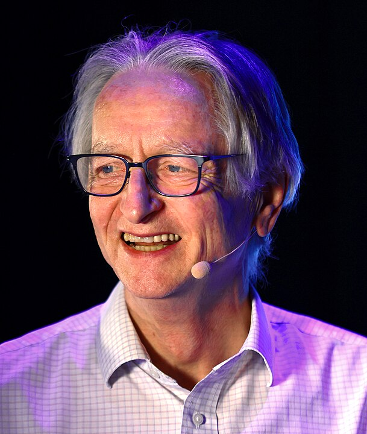

History of AI Part 2
CS123, Intro to AI
| Topics | |
|---|---|
| Overview of AI | Neural networks and deep learning |
| AI Problem Solving Revisited Machine Learning—Part 1 Applications of AI | Generative AI + Prompt engineering |
| Machine Learning—Part 2 | Custom chatbot creation |
| History of AI + Midterm | Social and ethical issues of AI Final |
Table of Contents
IntroductionMarvin Minsky, ANNs and the MIT AI LabFrank Rosenblatt and the PerceptronAI winterGeoffrey Hinton makes ANNs Cool AgainIBM Watson becomes a Jeopardy ChampionSiri, Alexa and Google AssistantFei Fei Lee and ImageNetYann LeCun and Convolutional Neural Networks (CNNs) Ian Goodfellow and Genertive Adversarial Networks (GANs)AlphaGo Beats World's Best Go PlayerReference
Introduction
This second lecture on the history of AI focuses on the development of connectionist AI (Artificial Neural Networks).
Marvin Minsky, ANNs and the MIT AI Lab
Marvin Lee Minsky was an American cognitive and computer scientist whois often referred to as one of the fathers of AI. He defined AI as “the science of making machines do things that would require intelligence if done by men”.
1951: While studying mathematics at Princeton, Minsky built the first learning machine, an artificial neural network (ANN) built from vacuum tubes called the Stochastic Neural Analog Reinforcement Calculator, or SNARC. It consisted of 40 artificial Hebbs Synapses.

Hebbs synapse image by Gregory Loan.
1959: He co-founded the Massachusetts Institute of Technology's AI laboratory.
Frank Rosenblatt and the Perceptron
1957: The perceptron, designed by by Frank Rosenblatt, was based on the McCulloch–Pitts mathematical model of a neuron (1943). It was a system for supervised machine learning for binary classifiers.
The first Perceptron, known as the Mark I, was a combination of hardware and software that ran on an IBM 7094 and custom hardware consisting of transisterized circuits. It was built at the Cornell Aeronautical Laboratory which was affiliated with Cornell University in New York.

Frank Rosenblatt working on wiring for a perceptron.
This was an early example of connectionism which was a competing approach to symbolism the dominant approach to AI at the time.
The perceptron and connectionism were notably criticized by Marvin Minsky and Seymour Papert in their 1969 book titled Perceptrons. In this book, they argued that the perceptron (and connectionism in general) had severe limitations. Their critique contributed to a decrease in enthusiasm and funding for connectionist research, marking the beginning of what is known as the "AI winter".
AI winter
In 1974, the applied mathematician Sir James Lighthill published a critical report on academic AI research, claiming that researchers had essentially over-promised and under-delivered when it came to the potential intelligence of machines. His condemnation resulted in stark funding cuts.
The period between the late 1970s and early 1990s signaled an “AI winter”—a term first used in 1984—that referred to the gap between AI expectations and the technology’s shortcomings.
(From The History of AI: A Timeline of Artificial Intelligence)
Geoffrey Hinton makes ANNs Cool Again
1986: British-Canadian Carnegie Mellon professor and computer scientist Geoffrey Hinton, often referred to as the "godfather of AI", was among several researchers who helped make neural networks cool again by demonstrating that they could be trained using backpropagation for improved image recognition and word prediction.

Photo by Vaughn Ridley/Collision via Sportsfile - Collision Conf, CC BY 2.0
The 2024 Nobel Prize in physics was awarded to John Hopfield and Geoffrey Hinton for their fundamental discoveries in machine learning, which paved the way for modern AI.
Hinton has frequently spoken publicly about the potential risks and benefits of AI. Here are some of the risks:
Autonomous Control: AI systems might write and execute their own code, potentially escaping human control.
Manipulation: AI could manipulate people using knowledge from literature and political strategies.
Unemployment: AI could lead to widespread job loss, devaluing human labor.
Bias and Misuse: Risks include fake news, bias in employment and policing, and autonomous battlefield robots.
Hinton emphasizes the potential for AI to do enormous good, here are some of the good things AI could do:
Healthcare: AI is already comparable to radiologists in interpreting medical images and is effective in designing drugs.
Efficiency: AI can perform tasks more efficiently, potentially leading to advancements in various fields.
Learning: AI systems have a better way of acquiring knowledge, which can lead to improved problem-solving and innovation.
IBM Watson becomes a Jeopardy Champion
 Ken Jennings, IBM Watson and Brad Rutter on the Jeopardy TV game show—CBS News
Ken Jennings, IBM Watson and Brad Rutter on the Jeopardy TV game show—CBS News
In 2011, An IBM computer system named Watson beat two of Jeopardy's all-time champions, Ken Jennings and Brad Rutter. The original Watson was a room-size computer consisting of 10 racks holding 90 servers, with a total of 2,880 processor cores. Watson was trained on information from Wikipedia, encyclopedias, dictionaries, religious texts, novels, plays, and books from Project Gutenberg, among other sources.
Watson’s architecture, known as DeepQA, utilized over 100 different algorithms and techniques to analyze questions, generate hypotheses, and evaluate evidence. The more of its algorithms that independently arrived at the same answer, the higher Watson’s confidence level. If the confidence level was high enough, Watson was programmed to buzz in during a game of Jeopardy. It took Watson an average of 3 seconds to come up with an answer.
Siri, Alexa and Google Assistant
In 2011, Apple demoed a virtual assistant named Siri. In 2014, Amazon released its virtual assistant named Alexa and in 2016 Google released Google Assistant. All three had natural language processing capabilities and could understand a spoken question and respond with an answer. But, they contained limitations—they used “command-and-control systems,” which are programmed to understand a long list of questions but cannot answer anything that falls outside their programming.
Fei Fei Lee and ImageNet
Fei-Fei Li is a, Chinese-American computer scientist is known as the "godmother of artificial intelligence"
In 2009 she and her team created ImageNet, a large-scale dataset of over 14 million images that has been instrumental in advancing computer vision and deep learning neural networks. She is also a strong advocate for diversity and ethical considerations in AI, and in 2017 she co-founded AI4ALL, an organization dedicated to increasing diversity and inclusion in AI.

Yann LeCun and Convolutional Neural Networks (CNNs)
CNNs were pioneered by Yann LeCun in the late 1980s and early 1990s. He developed the LeNet-5 architecture, which was designed to recognize handwritten digits. This work laid the foundation for modern deep learning and computer vision applications. Yann LeCun and Geoffrey Hinton are often referred to as “godfathers of AI”.
Ian Goodfellow and Genertive Adversarial Networks (GANs)
In 2014 Ian Goodfellow developed Generative Adversarial Networks (GANs) which have been foundational in advancing AI’s ability to generate realistic images.
AlphaGo Beats World's Best Go Player
 Image from boldbusiness.com
Image from boldbusiness.com
2016: Go was once considered too difficult for AI. The game is a googol (10100) times more complex than chess — with 10170 possible board configurations—more than the number of atoms in the universe. Google Deep Mind's AlphaGo AI system won a 4-1 victory over legendary Go player Lee Sedol widely who was considered the greatest player of the time. It proved that AI systems can learn how to solve the most challenging problems in highly complex domains.
AlphaGo combines deep neural networks with advanced search algorithms. One neural network — known as the “policy network” — selects the next move to play. The other neural network — the “value network” — predicts the winner of the game.
Using reinforcement learning, initially, AlphaGo was trained on amateur games of Go so the system could learn how humans play the game. Then AlphaGo played against different versions of itself thousands of times, each time learning from its mistakes.
Reference
"Godfather of Artificial Intelligence" Geoffrey Hinton on the promise, risks of advanced AI—CBS, 60 Minutes.
Watson, ‘Jeopardy!’ champion—IBM
Google Deep Mind AlphaGo—Google
The History of AI: A Timeline of Artificial Intelligence—Coursera
The Quest for Artificial Intelligence: A History of Ideas and Achievements—Nils J. Nilsson, Cambridge University Press, 2010.
Timeline of AI—an interactive timeline of the history of AI
 Intro to AI lecture notes by Brian Bird, written in , are licensed under a Creative Commons Attribution-ShareAlike 4.0 International License.
Intro to AI lecture notes by Brian Bird, written in , are licensed under a Creative Commons Attribution-ShareAlike 4.0 International License.
Note: GPT-4 and GPT-4o were used to draft parts of these notes.